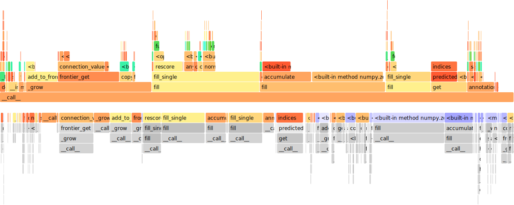

Performance¶
Profile Decoder¶
The default Python and Cython decoder can be profiled with Python’s standard cprofile. The output can be a sorted table and a flame graph. Both are generated below:
%%bash
python -m openpifpaf.predict coco/000000081988.jpg --no-download-progress --debug --profile-decoder
6486 function calls (6466 primitive calls) in 0.024 seconds
Ordered by: internal time
ncalls tottime percall cumtime percall filename:lineno(function)
11 0.003 0.000 0.003 0.000 {built-in method numpy.zeros}
1 0.002 0.002 0.005 0.005 /opt/hostedtoolcache/Python/3.7.10/x64/lib/python3.7/site-packages/openpifpaf/decoder/utils/caf_scored.py:38(fill_single)
89 0.002 0.000 0.002 0.000 /opt/hostedtoolcache/Python/3.7.10/x64/lib/python3.7/site-packages/openpifpaf/decoder/cifcaf.py:266(connection_value)
1 0.002 0.002 0.002 0.002 /opt/hostedtoolcache/Python/3.7.10/x64/lib/python3.7/site-packages/openpifpaf/decoder/utils/cif_seeds.py:30(fill_single)
17 0.001 0.000 0.001 0.000 {built-in method openpifpaf.functional.scalar_square_add_gauss_with_max}
7 0.001 0.000 0.001 0.000 /opt/hostedtoolcache/Python/3.7.10/x64/lib/python3.7/site-packages/openpifpaf/visualizer/base.py:98(indices)
68 0.001 0.000 0.002 0.000 /opt/hostedtoolcache/Python/3.7.10/x64/lib/python3.7/site-packages/openpifpaf/decoder/cifcaf.py:329(add_to_frontier)
17 0.001 0.000 0.002 0.000 /opt/hostedtoolcache/Python/3.7.10/x64/lib/python3.7/site-packages/openpifpaf/decoder/utils/cif_hr.py:26(accumulate)
38 0.001 0.000 0.001 0.000 /opt/hostedtoolcache/Python/3.7.10/x64/lib/python3.7/site-packages/openpifpaf/decoder/utils/caf_scored.py:32(rescore)
5 0.001 0.000 0.006 0.001 /opt/hostedtoolcache/Python/3.7.10/x64/lib/python3.7/site-packages/openpifpaf/decoder/cifcaf.py:325(_grow)
1 0.001 0.001 0.024 0.024 /opt/hostedtoolcache/Python/3.7.10/x64/lib/python3.7/site-packages/openpifpaf/decoder/cifcaf.py:202(__call__)
385/365 0.001 0.000 0.003 0.000 {built-in method numpy.core._multiarray_umath.implement_array_function}
78 0.001 0.000 0.001 0.000 {method 'reduce' of 'numpy.ufunc' objects}
1 0.001 0.001 0.001 0.001 /opt/hostedtoolcache/Python/3.7.10/x64/lib/python3.7/site-packages/openpifpaf/decoder/utils/nms.py:17(annotations)
223 0.000 0.000 0.000 0.000 {built-in method numpy.array}
76 0.000 0.000 0.003 0.000 /opt/hostedtoolcache/Python/3.7.10/x64/lib/python3.7/site-packages/openpifpaf/decoder/cifcaf.py:343(frontier_get)
160 0.000 0.000 0.000 0.000 {built-in method _heapq.heappush}
3 0.000 0.000 0.001 0.000 {built-in method builtins.sorted}
55 0.000 0.000 0.001 0.000 {openpifpaf.functional.scalar_values}
161 0.000 0.000 0.000 0.000 {openpifpaf.functional.grow_connection_blend}
19 0.000 0.000 0.001 0.000 /opt/hostedtoolcache/Python/3.7.10/x64/lib/python3.7/site-packages/numpy/linalg/linalg.py:2362(norm)
165 0.000 0.000 0.000 0.000 {built-in method builtins.max}
160 0.000 0.000 0.000 0.000 {built-in method _heapq.heappop}
164 0.000 0.000 0.001 0.000 <__array_function__ internals>:2(copy)
59 0.000 0.000 0.001 0.000 /opt/hostedtoolcache/Python/3.7.10/x64/lib/python3.7/site-packages/numpy/core/fromnumeric.py:70(_wrapreduction)
93 0.000 0.000 0.000 0.000 {built-in method numpy.empty}
5 0.000 0.000 0.000 0.000 /opt/hostedtoolcache/Python/3.7.10/x64/lib/python3.7/site-packages/openpifpaf/annotation.py:19(__init__)
164 0.000 0.000 0.000 0.000 /opt/hostedtoolcache/Python/3.7.10/x64/lib/python3.7/site-packages/numpy/lib/function_base.py:715(copy)
20 0.000 0.000 0.000 0.000 /opt/hostedtoolcache/Python/3.7.10/x64/lib/python3.7/site-packages/openpifpaf/annotation.py:108(score)
7 0.000 0.000 0.000 0.000 {method 'flush' of '_io.TextIOWrapper' objects}
810 0.000 0.000 0.000 0.000 {method 'get' of 'openpifpaf.functional.Occupancy' objects}
7 0.000 0.000 0.000 0.000 /opt/hostedtoolcache/Python/3.7.10/x64/lib/python3.7/logging/__init__.py:282(__init__)
55 0.000 0.000 0.000 0.000 /opt/hostedtoolcache/Python/3.7.10/x64/lib/python3.7/site-packages/numpy/core/numeric.py:288(full)
1 0.000 0.000 0.006 0.006 /opt/hostedtoolcache/Python/3.7.10/x64/lib/python3.7/site-packages/openpifpaf/decoder/utils/cif_hr.py:42(fill)
5 0.000 0.000 0.000 0.000 /opt/hostedtoolcache/Python/3.7.10/x64/lib/python3.7/site-packages/openpifpaf/decoder/cifcaf.py:220(mark_occupied)
899 0.000 0.000 0.000 0.000 {method 'append' of 'list' objects}
30 0.000 0.000 0.000 0.000 /opt/hostedtoolcache/Python/3.7.10/x64/lib/python3.7/site-packages/numpy/core/fromnumeric.py:2111(sum)
55 0.000 0.000 0.000 0.000 <__array_function__ internals>:2(copyto)
136 0.000 0.000 0.000 0.000 {method 'set' of 'openpifpaf.functional.Occupancy' objects}
30 0.000 0.000 0.000 0.000 <__array_function__ internals>:2(sum)
142 0.000 0.000 0.000 0.000 /opt/hostedtoolcache/Python/3.7.10/x64/lib/python3.7/site-packages/openpifpaf/headmeta.py:19(stride)
89 0.000 0.000 0.000 0.000 /opt/hostedtoolcache/Python/3.7.10/x64/lib/python3.7/site-packages/openpifpaf/decoder/utils/caf_scored.py:26(directed)
127 0.000 0.000 0.000 0.000 {method 'items' of 'dict' objects}
5 0.000 0.000 0.000 0.000 {method 'tolist' of 'numpy.ndarray' objects}
10 0.000 0.000 0.000 0.000 /opt/hostedtoolcache/Python/3.7.10/x64/lib/python3.7/site-packages/numpy/core/fromnumeric.py:1716(ravel)
89 0.000 0.000 0.000 0.000 {method 'add' of 'set' objects}
20 0.000 0.000 0.000 0.000 {method 'sort' of 'numpy.ndarray' objects}
10 0.000 0.000 0.000 0.000 {method 'ravel' of 'numpy.ndarray' objects}
7 0.000 0.000 0.000 0.000 /opt/hostedtoolcache/Python/3.7.10/x64/lib/python3.7/logging/__init__.py:360(getMessage)
38 0.000 0.000 0.000 0.000 <__array_function__ internals>:2(concatenate)
59 0.000 0.000 0.000 0.000 /opt/hostedtoolcache/Python/3.7.10/x64/lib/python3.7/site-packages/numpy/core/fromnumeric.py:71(<dictcomp>)
19 0.000 0.000 0.000 0.000 /opt/hostedtoolcache/Python/3.7.10/x64/lib/python3.7/site-packages/numpy/core/fromnumeric.py:2256(any)
7 0.000 0.000 0.001 0.000 /opt/hostedtoolcache/Python/3.7.10/x64/lib/python3.7/logging/__init__.py:1491(_log)
7 0.000 0.000 0.000 0.000 /opt/hostedtoolcache/Python/3.7.10/x64/lib/python3.7/logging/__init__.py:1446(findCaller)
90 0.000 0.000 0.000 0.000 {built-in method builtins.isinstance}
1 0.000 0.000 0.002 0.002 /opt/hostedtoolcache/Python/3.7.10/x64/lib/python3.7/site-packages/openpifpaf/decoder/utils/cif_seeds.py:67(get)
5 0.000 0.000 0.000 0.000 /opt/hostedtoolcache/Python/3.7.10/x64/lib/python3.7/site-packages/openpifpaf/annotation.py:62(add)
7 0.000 0.000 0.000 0.000 /opt/hostedtoolcache/Python/3.7.10/x64/lib/python3.7/logging/__init__.py:1614(isEnabledFor)
20 0.000 0.000 0.000 0.000 /opt/hostedtoolcache/Python/3.7.10/x64/lib/python3.7/site-packages/numpy/core/fromnumeric.py:844(sort)
10 0.000 0.000 0.000 0.000 /opt/hostedtoolcache/Python/3.7.10/x64/lib/python3.7/site-packages/numpy/core/numeric.py:624(flatnonzero)
10 0.000 0.000 0.000 0.000 <__array_function__ internals>:2(nonzero)
19 0.000 0.000 0.001 0.000 <__array_function__ internals>:2(norm)
7 0.000 0.000 0.000 0.000 {built-in method posix.getpid}
19 0.000 0.000 0.000 0.000 <__array_function__ internals>:2(any)
7 0.000 0.000 0.000 0.000 /opt/hostedtoolcache/Python/3.7.10/x64/lib/python3.7/posixpath.py:52(normcase)
6 0.000 0.000 0.001 0.000 /opt/hostedtoolcache/Python/3.7.10/x64/lib/python3.7/logging/__init__.py:1356(debug)
10 0.000 0.000 0.000 0.000 {method 'nonzero' of 'numpy.ndarray' objects}
116 0.000 0.000 0.000 0.000 {built-in method builtins.len}
14 0.000 0.000 0.000 0.000 /opt/hostedtoolcache/Python/3.7.10/x64/lib/python3.7/logging/__init__.py:736(filter)
7 0.000 0.000 0.000 0.000 /opt/hostedtoolcache/Python/3.7.10/x64/lib/python3.7/logging/__init__.py:1570(callHandlers)
164 0.000 0.000 0.000 0.000 /opt/hostedtoolcache/Python/3.7.10/x64/lib/python3.7/site-packages/numpy/lib/function_base.py:711(_copy_dispatcher)
20 0.000 0.000 0.000 0.000 {method 'copy' of 'numpy.ndarray' objects}
1 0.000 0.000 0.000 0.000 /opt/hostedtoolcache/Python/3.7.10/x64/lib/python3.7/site-packages/openpifpaf/decoder/cifcaf.py:263(<listcomp>)
1 0.000 0.000 0.000 0.000 /opt/hostedtoolcache/Python/3.7.10/x64/lib/python3.7/site-packages/openpifpaf/visualizer/cif.py:45(predicted)
7 0.000 0.000 0.000 0.000 /opt/hostedtoolcache/Python/3.7.10/x64/lib/python3.7/logging/__init__.py:1002(flush)
142 0.000 0.000 0.000 0.000 {built-in method builtins.abs}
7 0.000 0.000 0.000 0.000 /opt/hostedtoolcache/Python/3.7.10/x64/lib/python3.7/posixpath.py:144(basename)
7 0.000 0.000 0.000 0.000 /opt/hostedtoolcache/Python/3.7.10/x64/lib/python3.7/logging/__init__.py:1013(emit)
29 0.000 0.000 0.000 0.000 /opt/hostedtoolcache/Python/3.7.10/x64/lib/python3.7/site-packages/numpy/core/_asarray.py:23(asarray)
55 0.000 0.000 0.000 0.000 /opt/hostedtoolcache/Python/3.7.10/x64/lib/python3.7/site-packages/numpy/core/multiarray.py:1054(copyto)
7 0.000 0.000 0.000 0.000 /opt/hostedtoolcache/Python/3.7.10/x64/lib/python3.7/logging/__init__.py:1476(makeRecord)
10 0.000 0.000 0.000 0.000 <__array_function__ internals>:2(flatnonzero)
1 0.000 0.000 0.000 0.000 /opt/hostedtoolcache/Python/3.7.10/x64/lib/python3.7/site-packages/openpifpaf/visualizer/cif.py:52(_confidences)
7 0.000 0.000 0.000 0.000 /opt/hostedtoolcache/Python/3.7.10/x64/lib/python3.7/logging/__init__.py:595(format)
7 0.000 0.000 0.000 0.000 /opt/hostedtoolcache/Python/3.7.10/x64/lib/python3.7/logging/__init__.py:421(format)
7 0.000 0.000 0.000 0.000 /opt/hostedtoolcache/Python/3.7.10/x64/lib/python3.7/genericpath.py:121(_splitext)
7 0.000 0.000 0.000 0.000 /opt/hostedtoolcache/Python/3.7.10/x64/lib/python3.7/posixpath.py:121(splitext)
44 0.000 0.000 0.000 0.000 {built-in method time.perf_counter}
1 0.000 0.000 0.000 0.000 /opt/hostedtoolcache/Python/3.7.10/x64/lib/python3.7/site-packages/openpifpaf/decoder/utils/cif_seeds.py:21(__init__)
7 0.000 0.000 0.000 0.000 /opt/hostedtoolcache/Python/3.7.10/x64/lib/python3.7/logging/__init__.py:881(handle)
10 0.000 0.000 0.000 0.000 /opt/hostedtoolcache/Python/3.7.10/x64/lib/python3.7/site-packages/numpy/core/fromnumeric.py:52(_wrapfunc)
1 0.000 0.000 0.000 0.000 /opt/hostedtoolcache/Python/3.7.10/x64/lib/python3.7/site-packages/openpifpaf/decoder/utils/nms.py:22(<listcomp>)
1 0.000 0.000 0.000 0.000 /opt/hostedtoolcache/Python/3.7.10/x64/lib/python3.7/site-packages/openpifpaf/decoder/utils/caf_scored.py:44(<listcomp>)
30 0.000 0.000 0.000 0.000 /opt/hostedtoolcache/Python/3.7.10/x64/lib/python3.7/site-packages/numpy/core/_asarray.py:110(asanyarray)
10 0.000 0.000 0.000 0.000 /opt/hostedtoolcache/Python/3.7.10/x64/lib/python3.7/site-packages/numpy/core/fromnumeric.py:2617(amax)
20 0.000 0.000 0.000 0.000 <__array_function__ internals>:2(sort)
19 0.000 0.000 0.000 0.000 {built-in method builtins.issubclass}
7 0.000 0.000 0.000 0.000 /opt/hostedtoolcache/Python/3.7.10/x64/lib/python3.7/logging/__init__.py:1516(handle)
10 0.000 0.000 0.000 0.000 <__array_function__ internals>:2(ravel)
1 0.000 0.000 0.000 0.000 /opt/hostedtoolcache/Python/3.7.10/x64/lib/python3.7/site-packages/openpifpaf/visualizer/cifhr.py:17(predicted)
7 0.000 0.000 0.000 0.000 /opt/hostedtoolcache/Python/3.7.10/x64/lib/python3.7/logging/__init__.py:418(usesTime)
10 0.000 0.000 0.000 0.000 <__array_function__ internals>:2(amax)
10 0.000 0.000 0.000 0.000 /opt/hostedtoolcache/Python/3.7.10/x64/lib/python3.7/site-packages/numpy/core/fromnumeric.py:1827(nonzero)
20 0.000 0.000 0.000 0.000 {method 'acquire' of '_thread.RLock' objects}
7 0.000 0.000 0.000 0.000 {method 'write' of '_io.TextIOWrapper' objects}
1 0.000 0.000 0.000 0.000 /opt/hostedtoolcache/Python/3.7.10/x64/lib/python3.7/site-packages/openpifpaf/visualizer/caf.py:45(predicted)
6 0.000 0.000 0.000 0.000 /opt/hostedtoolcache/Python/3.7.10/x64/lib/python3.7/site-packages/openpifpaf/decoder/utils/nms.py:28(<genexpr>)
5 0.000 0.000 0.000 0.000 /opt/hostedtoolcache/Python/3.7.10/x64/lib/python3.7/site-packages/openpifpaf/decoder/utils/nms.py:55(<lambda>)
6 0.000 0.000 0.000 0.000 /opt/hostedtoolcache/Python/3.7.10/x64/lib/python3.7/logging/__init__.py:212(_acquireLock)
14 0.000 0.000 0.000 0.000 /opt/hostedtoolcache/Python/3.7.10/x64/lib/python3.7/logging/__init__.py:838(acquire)
19 0.000 0.000 0.000 0.000 {method 'conj' of 'numpy.ndarray' objects}
3 0.000 0.000 0.000 0.000 /opt/hostedtoolcache/Python/3.7.10/x64/lib/python3.7/abc.py:137(__instancecheck__)
1 0.000 0.000 0.000 0.000 /opt/hostedtoolcache/Python/3.7.10/x64/lib/python3.7/site-packages/openpifpaf/decoder/utils/nms.py:54(<listcomp>)
1 0.000 0.000 0.000 0.000 /opt/hostedtoolcache/Python/3.7.10/x64/lib/python3.7/site-packages/openpifpaf/decoder/utils/caf_scored.py:43(<listcomp>)
38 0.000 0.000 0.000 0.000 /opt/hostedtoolcache/Python/3.7.10/x64/lib/python3.7/site-packages/numpy/core/multiarray.py:143(concatenate)
21 0.000 0.000 0.000 0.000 {built-in method builtins.hasattr}
14 0.000 0.000 0.000 0.000 {built-in method _thread.get_ident}
1 0.000 0.000 0.000 0.000 /opt/hostedtoolcache/Python/3.7.10/x64/lib/python3.7/site-packages/openpifpaf/decoder/utils/caf_scored.py:18(__init__)
19 0.000 0.000 0.000 0.000 /opt/hostedtoolcache/Python/3.7.10/x64/lib/python3.7/site-packages/numpy/linalg/linalg.py:2358(_norm_dispatcher)
21 0.000 0.000 0.000 0.000 {method 'rfind' of 'str' objects}
10 0.000 0.000 0.000 0.000 {built-in method builtins.getattr}
2 0.000 0.000 0.000 0.000 {built-in method builtins.sum}
14 0.000 0.000 0.000 0.000 /opt/hostedtoolcache/Python/3.7.10/x64/lib/python3.7/logging/__init__.py:845(release)
7 0.000 0.000 0.000 0.000 /opt/hostedtoolcache/Python/3.7.10/x64/lib/python3.7/logging/__init__.py:858(format)
6 0.000 0.000 0.000 0.000 /opt/hostedtoolcache/Python/3.7.10/x64/lib/python3.7/logging/__init__.py:1600(getEffectiveLevel)
7 0.000 0.000 0.000 0.000 /opt/hostedtoolcache/Python/3.7.10/x64/lib/python3.7/threading.py:1225(current_thread)
20 0.000 0.000 0.000 0.000 /opt/hostedtoolcache/Python/3.7.10/x64/lib/python3.7/site-packages/numpy/core/fromnumeric.py:840(_sort_dispatcher)
7 0.000 0.000 0.000 0.000 {built-in method sys._getframe}
21 0.000 0.000 0.000 0.000 {built-in method posix.fspath}
3 0.000 0.000 0.000 0.000 {built-in method _abc._abc_instancecheck}
20 0.000 0.000 0.000 0.000 {method 'release' of '_thread.RLock' objects}
1 0.000 0.000 0.001 0.001 /opt/hostedtoolcache/Python/3.7.10/x64/lib/python3.7/site-packages/openpifpaf/visualizer/seeds.py:16(predicted)
20 0.000 0.000 0.000 0.000 /opt/hostedtoolcache/Python/3.7.10/x64/lib/python3.7/site-packages/openpifpaf/decoder/utils/caf_scored.py:75(<genexpr>)
20 0.000 0.000 0.000 0.000 /opt/hostedtoolcache/Python/3.7.10/x64/lib/python3.7/site-packages/openpifpaf/decoder/utils/caf_scored.py:76(<genexpr>)
6 0.000 0.000 0.000 0.000 /opt/hostedtoolcache/Python/3.7.10/x64/lib/python3.7/site-packages/openpifpaf/decoder/utils/nms.py:29(<genexpr>)
7 0.000 0.000 0.000 0.000 /opt/hostedtoolcache/Python/3.7.10/x64/lib/python3.7/logging/__init__.py:117(getLevelName)
7 0.000 0.000 0.000 0.000 /opt/hostedtoolcache/Python/3.7.10/x64/lib/python3.7/logging/__init__.py:154(<lambda>)
6 0.000 0.000 0.000 0.000 /opt/hostedtoolcache/Python/3.7.10/x64/lib/python3.7/logging/__init__.py:221(_releaseLock)
7 0.000 0.000 0.000 0.000 /opt/hostedtoolcache/Python/3.7.10/x64/lib/python3.7/logging/__init__.py:573(usesTime)
19 0.000 0.000 0.000 0.000 /opt/hostedtoolcache/Python/3.7.10/x64/lib/python3.7/site-packages/numpy/core/fromnumeric.py:2251(_any_dispatcher)
14 0.000 0.000 0.000 0.000 {method 'get' of 'dict' objects}
1 0.000 0.000 0.002 0.002 /opt/hostedtoolcache/Python/3.7.10/x64/lib/python3.7/site-packages/openpifpaf/decoder/utils/cif_seeds.py:25(fill)
1 0.000 0.000 0.005 0.005 /opt/hostedtoolcache/Python/3.7.10/x64/lib/python3.7/site-packages/openpifpaf/decoder/utils/caf_scored.py:80(fill)
5 0.000 0.000 0.000 0.000 /opt/hostedtoolcache/Python/3.7.10/x64/lib/python3.7/site-packages/openpifpaf/decoder/utils/nms.py:34(<lambda>)
7 0.000 0.000 0.000 0.000 /opt/hostedtoolcache/Python/3.7.10/x64/lib/python3.7/site-packages/openpifpaf/visualizer/base.py:103(<listcomp>)
7 0.000 0.000 0.000 0.000 /opt/hostedtoolcache/Python/3.7.10/x64/lib/python3.7/logging/__init__.py:579(formatMessage)
1 0.000 0.000 0.000 0.000 /opt/hostedtoolcache/Python/3.7.10/x64/lib/python3.7/logging/__init__.py:1368(info)
7 0.000 0.000 0.000 0.000 /opt/hostedtoolcache/Python/3.7.10/x64/lib/python3.7/threading.py:1064(name)
7 0.000 0.000 0.000 0.000 {method 'find' of 'str' objects}
1 0.000 0.000 0.000 0.000 /opt/hostedtoolcache/Python/3.7.10/x64/lib/python3.7/site-packages/openpifpaf/visualizer/caf.py:52(_confidences)
1 0.000 0.000 0.000 0.000 /opt/hostedtoolcache/Python/3.7.10/x64/lib/python3.7/site-packages/openpifpaf/visualizer/caf.py:63(_regressions)
1 0.000 0.000 0.000 0.000 /opt/hostedtoolcache/Python/3.7.10/x64/lib/python3.7/site-packages/openpifpaf/visualizer/occupancy.py:17(predicted)
1 0.000 0.000 0.000 0.000 /opt/hostedtoolcache/Python/3.7.10/x64/lib/python3.7/site-packages/openpifpaf/decoder/utils/cif_hr.py:20(__init__)
7 0.000 0.000 0.000 0.000 /opt/hostedtoolcache/Python/3.7.10/x64/lib/python3.7/multiprocessing/process.py:36(current_process)
10 0.000 0.000 0.000 0.000 /opt/hostedtoolcache/Python/3.7.10/x64/lib/python3.7/site-packages/numpy/core/fromnumeric.py:1823(_nonzero_dispatcher)
30 0.000 0.000 0.000 0.000 /opt/hostedtoolcache/Python/3.7.10/x64/lib/python3.7/site-packages/numpy/core/fromnumeric.py:2106(_sum_dispatcher)
10 0.000 0.000 0.000 0.000 /opt/hostedtoolcache/Python/3.7.10/x64/lib/python3.7/site-packages/numpy/core/numeric.py:620(_flatnonzero_dispatcher)
7 0.000 0.000 0.000 0.000 /opt/hostedtoolcache/Python/3.7.10/x64/lib/python3.7/posixpath.py:41(_get_sep)
7 0.000 0.000 0.000 0.000 {built-in method time.time}
1 0.000 0.000 0.000 0.000 /opt/hostedtoolcache/Python/3.7.10/x64/lib/python3.7/site-packages/openpifpaf/visualizer/cif.py:61(_regressions)
10 0.000 0.000 0.000 0.000 /opt/hostedtoolcache/Python/3.7.10/x64/lib/python3.7/site-packages/numpy/core/fromnumeric.py:2612(_amax_dispatcher)
1 0.000 0.000 0.000 0.000 {method 'disable' of '_lsprof.Profiler' objects}
7 0.000 0.000 0.000 0.000 /opt/hostedtoolcache/Python/3.7.10/x64/lib/python3.7/multiprocessing/process.py:180(name)
10 0.000 0.000 0.000 0.000 /opt/hostedtoolcache/Python/3.7.10/x64/lib/python3.7/site-packages/numpy/core/fromnumeric.py:1712(_ravel_dispatcher)
INFO:__main__:neural network device: cpu (CUDA available: False, count: 0)
DEBUG:openpifpaf.network.factory:Shell(
(base_net): ShuffleNetV2K(
(input_block): Sequential(
(0): Sequential(
(0): Conv2d(3, 24, kernel_size=(3, 3), stride=(2, 2), padding=(1, 1), bias=False)
(1): BatchNorm2d(24, eps=0.0001, momentum=0.01, affine=True, track_running_stats=True)
(2): ReLU(inplace=True)
)
)
(stage2): Sequential(
(0): InvertedResidualK(
(branch1): Sequential(
(0): Conv2d(24, 24, kernel_size=(5, 5), stride=(2, 2), padding=(2, 2), groups=24, bias=False)
(1): BatchNorm2d(24, eps=0.0001, momentum=0.01, affine=True, track_running_stats=True)
(2): Conv2d(24, 174, kernel_size=(1, 1), stride=(1, 1), bias=False)
(3): BatchNorm2d(174, eps=0.0001, momentum=0.01, affine=True, track_running_stats=True)
(4): ReLU(inplace=True)
)
(branch2): Sequential(
(0): Conv2d(24, 174, kernel_size=(1, 1), stride=(1, 1), bias=False)
(1): BatchNorm2d(174, eps=0.0001, momentum=0.01, affine=True, track_running_stats=True)
(2): ReLU(inplace=True)
(3): Conv2d(174, 174, kernel_size=(5, 5), stride=(2, 2), padding=(2, 2), groups=174, bias=False)
(4): BatchNorm2d(174, eps=0.0001, momentum=0.01, affine=True, track_running_stats=True)
(5): Conv2d(174, 174, kernel_size=(1, 1), stride=(1, 1), bias=False)
(6): BatchNorm2d(174, eps=0.0001, momentum=0.01, affine=True, track_running_stats=True)
(7): ReLU(inplace=True)
)
)
(1): InvertedResidualK(
(branch2): Sequential(
(0): Conv2d(174, 174, kernel_size=(1, 1), stride=(1, 1), bias=False)
(1): BatchNorm2d(174, eps=0.0001, momentum=0.01, affine=True, track_running_stats=True)
(2): ReLU(inplace=True)
(3): Conv2d(174, 174, kernel_size=(5, 5), stride=(1, 1), padding=(2, 2), groups=174, bias=False)
(4): BatchNorm2d(174, eps=0.0001, momentum=0.01, affine=True, track_running_stats=True)
(5): Conv2d(174, 174, kernel_size=(1, 1), stride=(1, 1), bias=False)
(6): BatchNorm2d(174, eps=0.0001, momentum=0.01, affine=True, track_running_stats=True)
(7): ReLU(inplace=True)
)
)
(2): InvertedResidualK(
(branch2): Sequential(
(0): Conv2d(174, 174, kernel_size=(1, 1), stride=(1, 1), bias=False)
(1): BatchNorm2d(174, eps=0.0001, momentum=0.01, affine=True, track_running_stats=True)
(2): ReLU(inplace=True)
(3): Conv2d(174, 174, kernel_size=(5, 5), stride=(1, 1), padding=(2, 2), groups=174, bias=False)
(4): BatchNorm2d(174, eps=0.0001, momentum=0.01, affine=True, track_running_stats=True)
(5): Conv2d(174, 174, kernel_size=(1, 1), stride=(1, 1), bias=False)
(6): BatchNorm2d(174, eps=0.0001, momentum=0.01, affine=True, track_running_stats=True)
(7): ReLU(inplace=True)
)
)
(3): InvertedResidualK(
(branch2): Sequential(
(0): Conv2d(174, 174, kernel_size=(1, 1), stride=(1, 1), bias=False)
(1): BatchNorm2d(174, eps=0.0001, momentum=0.01, affine=True, track_running_stats=True)
(2): ReLU(inplace=True)
(3): Conv2d(174, 174, kernel_size=(5, 5), stride=(1, 1), padding=(2, 2), groups=174, bias=False)
(4): BatchNorm2d(174, eps=0.0001, momentum=0.01, affine=True, track_running_stats=True)
(5): Conv2d(174, 174, kernel_size=(1, 1), stride=(1, 1), bias=False)
(6): BatchNorm2d(174, eps=0.0001, momentum=0.01, affine=True, track_running_stats=True)
(7): ReLU(inplace=True)
)
)
)
(stage3): Sequential(
(0): InvertedResidualK(
(branch1): Sequential(
(0): Conv2d(348, 348, kernel_size=(5, 5), stride=(2, 2), padding=(2, 2), groups=348, bias=False)
(1): BatchNorm2d(348, eps=0.0001, momentum=0.01, affine=True, track_running_stats=True)
(2): Conv2d(348, 348, kernel_size=(1, 1), stride=(1, 1), bias=False)
(3): BatchNorm2d(348, eps=0.0001, momentum=0.01, affine=True, track_running_stats=True)
(4): ReLU(inplace=True)
)
(branch2): Sequential(
(0): Conv2d(348, 348, kernel_size=(1, 1), stride=(1, 1), bias=False)
(1): BatchNorm2d(348, eps=0.0001, momentum=0.01, affine=True, track_running_stats=True)
(2): ReLU(inplace=True)
(3): Conv2d(348, 348, kernel_size=(5, 5), stride=(2, 2), padding=(2, 2), groups=348, bias=False)
(4): BatchNorm2d(348, eps=0.0001, momentum=0.01, affine=True, track_running_stats=True)
(5): Conv2d(348, 348, kernel_size=(1, 1), stride=(1, 1), bias=False)
(6): BatchNorm2d(348, eps=0.0001, momentum=0.01, affine=True, track_running_stats=True)
(7): ReLU(inplace=True)
)
)
(1): InvertedResidualK(
(branch2): Sequential(
(0): Conv2d(348, 348, kernel_size=(1, 1), stride=(1, 1), bias=False)
(1): BatchNorm2d(348, eps=0.0001, momentum=0.01, affine=True, track_running_stats=True)
(2): ReLU(inplace=True)
(3): Conv2d(348, 348, kernel_size=(5, 5), stride=(1, 1), padding=(2, 2), groups=348, bias=False)
(4): BatchNorm2d(348, eps=0.0001, momentum=0.01, affine=True, track_running_stats=True)
(5): Conv2d(348, 348, kernel_size=(1, 1), stride=(1, 1), bias=False)
(6): BatchNorm2d(348, eps=0.0001, momentum=0.01, affine=True, track_running_stats=True)
(7): ReLU(inplace=True)
)
)
(2): InvertedResidualK(
(branch2): Sequential(
(0): Conv2d(348, 348, kernel_size=(1, 1), stride=(1, 1), bias=False)
(1): BatchNorm2d(348, eps=0.0001, momentum=0.01, affine=True, track_running_stats=True)
(2): ReLU(inplace=True)
(3): Conv2d(348, 348, kernel_size=(5, 5), stride=(1, 1), padding=(2, 2), groups=348, bias=False)
(4): BatchNorm2d(348, eps=0.0001, momentum=0.01, affine=True, track_running_stats=True)
(5): Conv2d(348, 348, kernel_size=(1, 1), stride=(1, 1), bias=False)
(6): BatchNorm2d(348, eps=0.0001, momentum=0.01, affine=True, track_running_stats=True)
(7): ReLU(inplace=True)
)
)
(3): InvertedResidualK(
(branch2): Sequential(
(0): Conv2d(348, 348, kernel_size=(1, 1), stride=(1, 1), bias=False)
(1): BatchNorm2d(348, eps=0.0001, momentum=0.01, affine=True, track_running_stats=True)
(2): ReLU(inplace=True)
(3): Conv2d(348, 348, kernel_size=(5, 5), stride=(1, 1), padding=(2, 2), groups=348, bias=False)
(4): BatchNorm2d(348, eps=0.0001, momentum=0.01, affine=True, track_running_stats=True)
(5): Conv2d(348, 348, kernel_size=(1, 1), stride=(1, 1), bias=False)
(6): BatchNorm2d(348, eps=0.0001, momentum=0.01, affine=True, track_running_stats=True)
(7): ReLU(inplace=True)
)
)
(4): InvertedResidualK(
(branch2): Sequential(
(0): Conv2d(348, 348, kernel_size=(1, 1), stride=(1, 1), bias=False)
(1): BatchNorm2d(348, eps=0.0001, momentum=0.01, affine=True, track_running_stats=True)
(2): ReLU(inplace=True)
(3): Conv2d(348, 348, kernel_size=(5, 5), stride=(1, 1), padding=(2, 2), groups=348, bias=False)
(4): BatchNorm2d(348, eps=0.0001, momentum=0.01, affine=True, track_running_stats=True)
(5): Conv2d(348, 348, kernel_size=(1, 1), stride=(1, 1), bias=False)
(6): BatchNorm2d(348, eps=0.0001, momentum=0.01, affine=True, track_running_stats=True)
(7): ReLU(inplace=True)
)
)
(5): InvertedResidualK(
(branch2): Sequential(
(0): Conv2d(348, 348, kernel_size=(1, 1), stride=(1, 1), bias=False)
(1): BatchNorm2d(348, eps=0.0001, momentum=0.01, affine=True, track_running_stats=True)
(2): ReLU(inplace=True)
(3): Conv2d(348, 348, kernel_size=(5, 5), stride=(1, 1), padding=(2, 2), groups=348, bias=False)
(4): BatchNorm2d(348, eps=0.0001, momentum=0.01, affine=True, track_running_stats=True)
(5): Conv2d(348, 348, kernel_size=(1, 1), stride=(1, 1), bias=False)
(6): BatchNorm2d(348, eps=0.0001, momentum=0.01, affine=True, track_running_stats=True)
(7): ReLU(inplace=True)
)
)
(6): InvertedResidualK(
(branch2): Sequential(
(0): Conv2d(348, 348, kernel_size=(1, 1), stride=(1, 1), bias=False)
(1): BatchNorm2d(348, eps=0.0001, momentum=0.01, affine=True, track_running_stats=True)
(2): ReLU(inplace=True)
(3): Conv2d(348, 348, kernel_size=(5, 5), stride=(1, 1), padding=(2, 2), groups=348, bias=False)
(4): BatchNorm2d(348, eps=0.0001, momentum=0.01, affine=True, track_running_stats=True)
(5): Conv2d(348, 348, kernel_size=(1, 1), stride=(1, 1), bias=False)
(6): BatchNorm2d(348, eps=0.0001, momentum=0.01, affine=True, track_running_stats=True)
(7): ReLU(inplace=True)
)
)
(7): InvertedResidualK(
(branch2): Sequential(
(0): Conv2d(348, 348, kernel_size=(1, 1), stride=(1, 1), bias=False)
(1): BatchNorm2d(348, eps=0.0001, momentum=0.01, affine=True, track_running_stats=True)
(2): ReLU(inplace=True)
(3): Conv2d(348, 348, kernel_size=(5, 5), stride=(1, 1), padding=(2, 2), groups=348, bias=False)
(4): BatchNorm2d(348, eps=0.0001, momentum=0.01, affine=True, track_running_stats=True)
(5): Conv2d(348, 348, kernel_size=(1, 1), stride=(1, 1), bias=False)
(6): BatchNorm2d(348, eps=0.0001, momentum=0.01, affine=True, track_running_stats=True)
(7): ReLU(inplace=True)
)
)
)
(stage4): Sequential(
(0): InvertedResidualK(
(branch1): Sequential(
(0): Conv2d(696, 696, kernel_size=(5, 5), stride=(2, 2), padding=(2, 2), groups=696, bias=False)
(1): BatchNorm2d(696, eps=0.0001, momentum=0.01, affine=True, track_running_stats=True)
(2): Conv2d(696, 696, kernel_size=(1, 1), stride=(1, 1), bias=False)
(3): BatchNorm2d(696, eps=0.0001, momentum=0.01, affine=True, track_running_stats=True)
(4): ReLU(inplace=True)
)
(branch2): Sequential(
(0): Conv2d(696, 696, kernel_size=(1, 1), stride=(1, 1), bias=False)
(1): BatchNorm2d(696, eps=0.0001, momentum=0.01, affine=True, track_running_stats=True)
(2): ReLU(inplace=True)
(3): Conv2d(696, 696, kernel_size=(5, 5), stride=(2, 2), padding=(2, 2), groups=696, bias=False)
(4): BatchNorm2d(696, eps=0.0001, momentum=0.01, affine=True, track_running_stats=True)
(5): Conv2d(696, 696, kernel_size=(1, 1), stride=(1, 1), bias=False)
(6): BatchNorm2d(696, eps=0.0001, momentum=0.01, affine=True, track_running_stats=True)
(7): ReLU(inplace=True)
)
)
(1): InvertedResidualK(
(branch2): Sequential(
(0): Conv2d(696, 696, kernel_size=(1, 1), stride=(1, 1), bias=False)
(1): BatchNorm2d(696, eps=0.0001, momentum=0.01, affine=True, track_running_stats=True)
(2): ReLU(inplace=True)
(3): Conv2d(696, 696, kernel_size=(5, 5), stride=(1, 1), padding=(2, 2), groups=696, bias=False)
(4): BatchNorm2d(696, eps=0.0001, momentum=0.01, affine=True, track_running_stats=True)
(5): Conv2d(696, 696, kernel_size=(1, 1), stride=(1, 1), bias=False)
(6): BatchNorm2d(696, eps=0.0001, momentum=0.01, affine=True, track_running_stats=True)
(7): ReLU(inplace=True)
)
)
(2): InvertedResidualK(
(branch2): Sequential(
(0): Conv2d(696, 696, kernel_size=(1, 1), stride=(1, 1), bias=False)
(1): BatchNorm2d(696, eps=0.0001, momentum=0.01, affine=True, track_running_stats=True)
(2): ReLU(inplace=True)
(3): Conv2d(696, 696, kernel_size=(5, 5), stride=(1, 1), padding=(2, 2), groups=696, bias=False)
(4): BatchNorm2d(696, eps=0.0001, momentum=0.01, affine=True, track_running_stats=True)
(5): Conv2d(696, 696, kernel_size=(1, 1), stride=(1, 1), bias=False)
(6): BatchNorm2d(696, eps=0.0001, momentum=0.01, affine=True, track_running_stats=True)
(7): ReLU(inplace=True)
)
)
(3): InvertedResidualK(
(branch2): Sequential(
(0): Conv2d(696, 696, kernel_size=(1, 1), stride=(1, 1), bias=False)
(1): BatchNorm2d(696, eps=0.0001, momentum=0.01, affine=True, track_running_stats=True)
(2): ReLU(inplace=True)
(3): Conv2d(696, 696, kernel_size=(5, 5), stride=(1, 1), padding=(2, 2), groups=696, bias=False)
(4): BatchNorm2d(696, eps=0.0001, momentum=0.01, affine=True, track_running_stats=True)
(5): Conv2d(696, 696, kernel_size=(1, 1), stride=(1, 1), bias=False)
(6): BatchNorm2d(696, eps=0.0001, momentum=0.01, affine=True, track_running_stats=True)
(7): ReLU(inplace=True)
)
)
)
(conv5): Sequential(
(0): Conv2d(1392, 1392, kernel_size=(1, 1), stride=(1, 1), bias=False)
(1): BatchNorm2d(1392, eps=0.0001, momentum=0.01, affine=True, track_running_stats=True)
(2): ReLU(inplace=True)
)
)
(head_nets): ModuleList(
(0): CompositeField3(
(dropout): Dropout2d(p=0.0, inplace=False)
(conv): Conv2d(1392, 340, kernel_size=(1, 1), stride=(1, 1))
(upsample_op): PixelShuffle(upscale_factor=2)
)
(1): CompositeField3(
(dropout): Dropout2d(p=0.0, inplace=False)
(conv): Conv2d(1392, 684, kernel_size=(1, 1), stride=(1, 1))
(upsample_op): PixelShuffle(upscale_factor=2)
)
)
)
DEBUG:openpifpaf.decoder.factory:head names = ['cif', 'caf']
DEBUG:openpifpaf.visualizer.base:cif: indices = []
DEBUG:openpifpaf.show.painters:color connections = True, lw = 2, marker = 6
DEBUG:openpifpaf.show.painters:color connections = False, lw = 6, marker = 3
DEBUG:openpifpaf.visualizer.base:caf: indices = []
DEBUG:openpifpaf.show.painters:color connections = True, lw = 2, marker = 6
DEBUG:openpifpaf.show.painters:color connections = False, lw = 6, marker = 3
DEBUG:openpifpaf.decoder.factory:created 1 decoders
DEBUG:openpifpaf.show.painters:color connections = False, lw = 6, marker = 3
DEBUG:openpifpaf.transforms.pad:valid area before pad: [ 0. 0. 639. 426.], image size = (640, 427)
DEBUG:openpifpaf.transforms.pad:pad with (0, 3, 1, 3)
DEBUG:openpifpaf.transforms.pad:valid area after pad: [ 0. 3. 639. 426.], image size = (641, 433)
DEBUG:openpifpaf.decoder.decoder:nn processing time: 0.806s
DEBUG:openpifpaf.decoder.decoder:parallel execution with worker <openpifpaf.decoder.decoder.DummyPool object at 0x7f52d3f8a710>
DEBUG:openpifpaf.decoder.multi:task 0
DEBUG:openpifpaf.decoder.cifcaf:initial annotations = 0
DEBUG:openpifpaf.decoder.utils.cif_hr:target_intensities 0.006s
DEBUG:openpifpaf.decoder.utils.cif_seeds:seeds 742, 0.002s (C++ 0.001s)
DEBUG:openpifpaf.decoder.utils.caf_scored:scored caf (1096, 1028) in 0.005s
DEBUG:openpifpaf.decoder.cifcaf:annotations 5, 0.023s
DEBUG:openpifpaf.decoder.utils.nms:nms = 0.001s
INFO:openpifpaf.decoder.cifcaf:5 annotations: [15, 13, 15, 12, 13]
INFO:openpifpaf.decoder.profiler:writing profile file profile_decoder.prof
DEBUG:openpifpaf.decoder.decoder:time: nn = 0.806s, dec = 0.032s
INFO:__main__:batch 0: coco/000000081988.jpg
!flameprof profile_decoder.prof > profile_decoder_flame.svg

There is a second output that is generated from the Autograd Profiler. This can only be viewed in the Chrome browser:
open
chrome://tracingclick “Load” in the top left corner
select
decoder_profile.1.json
This is the same type of plot that is used to trace the training of a batch. An example of such a plot is shown below.